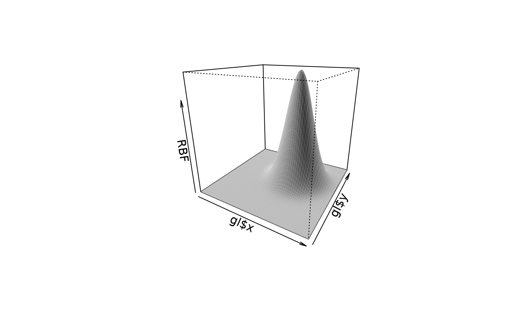
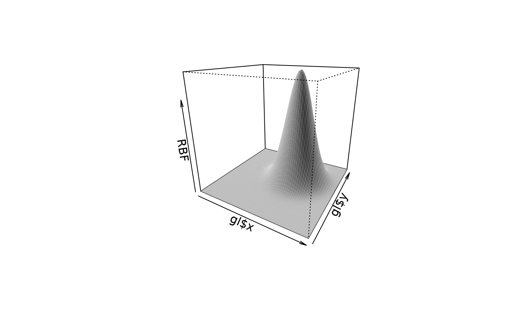

Wendland family of covariance functions and supporting numerical functions
Wendland.RdComputes the compactly supported, stationatry Wendland covariance function as a function ofdistance. This family is useful for creating sparse covariance matrices.
Wendland(d, aRange = 1, dimension, k,derivative=0, phi=NA, theta=NULL)
Wendland2.2(d, aRange=1, theta=NULL)
Wendland.beta(n,k)
wendland.eval(r, n, k, derivative = 0)
fields.pochup(q, k)
fields.pochdown(q, k)
fields.D(f,name,order = 1)
<!-- %Wendland.father(x, aRange = 1, dimension = 1, k=3) -->
<!-- %Wendland.mother(x, aRange = 1, dimension = 1, k=3) -->
<!-- %wendland.basis(x1, x2, aRange = 1, V=NULL, -->
<!-- % k = 3, C = NA, Dist.args = list(method = "euclidean"), -->
<!-- % spam.format = TRUE, verbose = FALSE, flavor=0) -->Arguments
- d
Distances between locations. Or for wendland.coef the dimension of the locations.
- aRange
Scale for distances. This is the same as the range parameter.
- theta
Same as aRange.
- dimension
Dimension of the locations
- n
Dimension for computing Wendland polynomial coefficients
- k
Order of covariance function.
- derivative
Indicates derivative of covariance function
- phi
Depreciated argument will give stop if not an NA. (Formerly the scale factor to multiply the function. Equivalent to the marginal variance or sill if viewed as a covariance function.)
- r
Real value in [0,1] to evaluate Wendland function.
- q
Order of Pochhammer symbol
- f
Numerical expression to differentiate.
- name
Variable with which to take derivative.
- order
Order of derivative.
Details
This is the basic function applied to distances and called by the
wendland.cov function. It can also be used as the Covariance or
Taper specifications in the more general
stationary.cov and station.taper.cov functions.
The proofs and construction of the Wendland family of positive definite functions can be found in the work of Wendland(1995).
( H. Wendland. Piecewise polynomial , positive definite and compactly supported radial functions of minimal degree. AICM 4(1995), pp 389-396.)
The Wendland covariance function is a positive
polynomial on [0,aRange] and zero beyond aRange. It is further normalized in these fields functions to be 1 at 0. The parameter k detemines the smoothness of the covariance at zero. The additional parameter n or dimension is needed because the property of
positive definitness for radial functions depends on the dimension being considered.
The polynomial terms of the Wenland function.
are computed recursively based on the values of k
and dimension in the function wendland.eval. The matrix of
coefficients found by Wendland.beta is used to weight each polynomial term and follows Wendland's original construction of these functions. The recursive definition of the Wendland coefficients depends on Pochhammer symbols akin to binomial coefficients:
fields.pochup(q, k)
calculates the Pochhammer symbol for rising factorial q(q+1)(q+2)...(q+k-1)
and
fields.pochdown(q, k)
calculates the Pochhammer symbol for falling factorial q(q-1)(q-2)...(q-k+1).
Derivatives are found symbolically using a recursive modification of the base function D (fields.D) and then evaluated numerically based on the polynomial form.
A specific example of the Wendland family is Wendland2.2 (k=2, dimension=2). This is included mainly for testing but the explicit formula may also be enlightening.
Value
A vector of the covariances or its derivative.
See also
wendland.cov, stationary.taper.cov
Examples
dt<- seq( 0,1.5,, 200)
y<- Wendland( dt, k=2, dimension=2)
plot( dt, y, type="l")
# should agree with
y.test<- Wendland2.2( dt)
points( dt, y.test)
# second derivative
plot( dt, Wendland( dt, k=4, dimension=2, derivative=2), type="l")
 # a radial basis function using the Wendland the "knot" is at (.25,.25)
gl<- list( x= seq( -1,1,,60), y = seq( -1,1,,60) )
bigD<- rdist( make.surface.grid( gl), matrix( c(.25,.25), nrow=1))
RBF<- matrix(Wendland( bigD, k=2, dimension=2), 60,60)
# perspective with some useful settings for shading.
persp( gl$x, gl$y, RBF, theta =30, phi=20, shade=.3, border=NA, col="grey90")

# a radial basis function using the Wendland the "knot" is at (.25,.25)
gl<- list( x= seq( -1,1,,60), y = seq( -1,1,,60) )
bigD<- rdist( make.surface.grid( gl), matrix( c(.25,.25), nrow=1))
RBF<- matrix(Wendland( bigD, k=2, dimension=2), 60,60)
# perspective with some useful settings for shading.
persp( gl$x, gl$y, RBF, theta =30, phi=20, shade=.3, border=NA, col="grey90")
